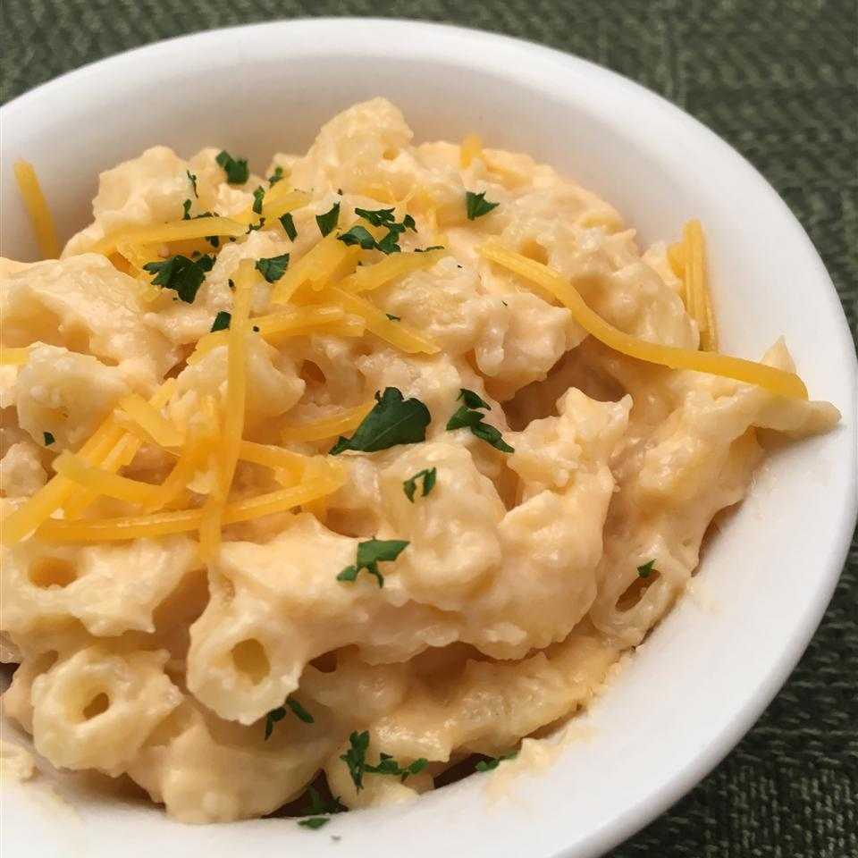

Cauliflower Mac-N-Cheese

Description
Tasty mac-n-cheese with a special cauliflower sauce.
Make this in under 30 minutes and enjoy with your family! (the kids will love it)
Ingredients
- 1½ cups elbow macaroni
- ½ cup cauliflower florets
- Cooking spray
- 1 tbsp. olive oil
- 1 tbsp. all-purpose flour
- ½ cup milk
- 1½ cups shredded Cheddar cheese
- ½ package cream cheese
- ½ tsp. salt
- ⅛ tsp. ground black pepper
Steps
- Bring a large pot of lightly salted water to a boil.
Cook elbow macaroni in the boiling water, stirring
occasionally until tender yet firm to the bite, 8 minutes.
Drain.
- Place a steamer insert into a saucepan and fill with water
to just below the bottom of the steamer. Bring water to a boil.
Add cauliflower, cover, and steam until tender, 5 to 6 minutes.
Place cauliflower in a blender or food processor; blend until
smooth.
- Coat a large saucepan with non-stick cooking spray; place
over medium heat. Add oil and flour; cook, stirring constantly,
until a thick paste forms, 1 to 2 minutes. Add milk; cook
and stir until mixture thickens, 3 to 4 minutes.
- Mix cauliflower, Cheddar cheese, cream cheese, salt, and pepper
into milk mixture; stir until sauce is smooth. Fold macaroni
into sauce.
Back to main menu